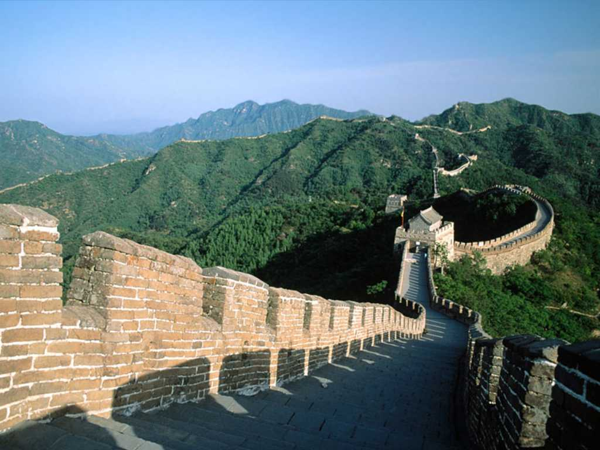

The Great Wall 万里の長城
世界の三大人口建造物のひとつと言われている万里の長城は月から見える唯一の人工建造物でイスラマバードから北京国際空港着陸前左手に美しい姿が見えた TajMahal Pyramid 紀元前５００年頃から建造が始まり全長は約６,０００ｋｍ総延長は約５０,０００ｋｍある 明代に造られた八達嶺から２kmほど右に長城を散策したが奥は崩れて補修されていなかった
AI解説